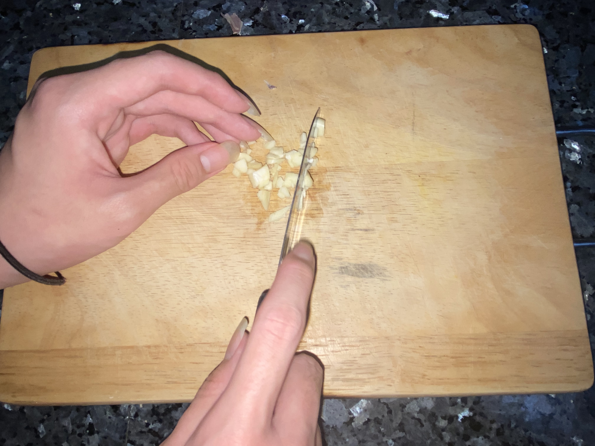
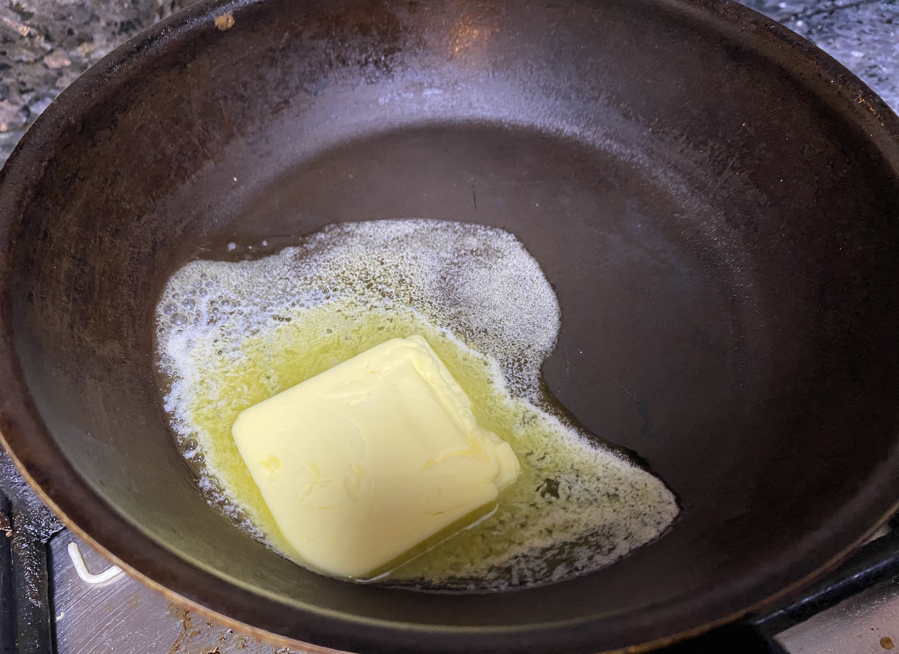
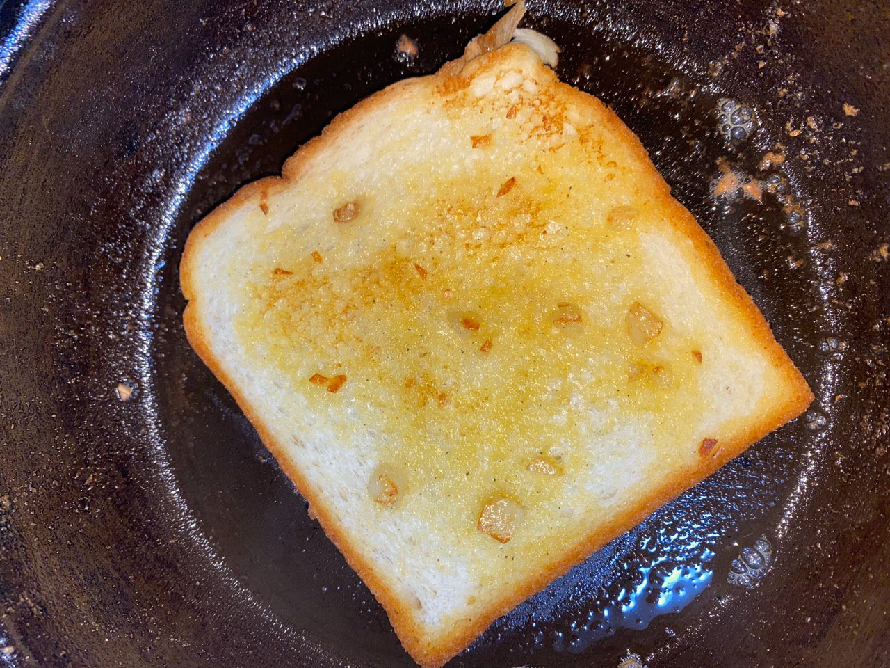
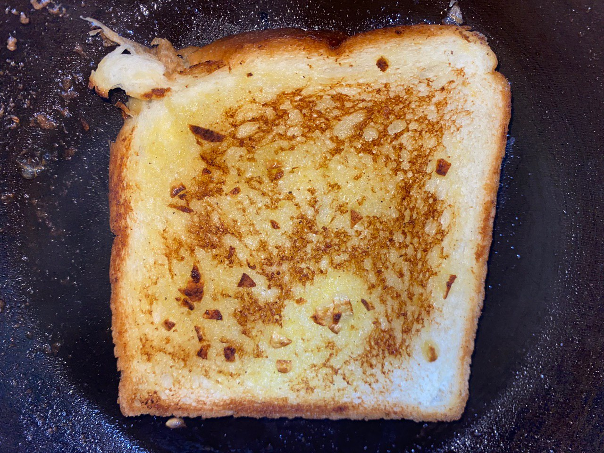

For these, you'll need: A clove of garlic 2 teaspoons of butter 2 slices of bread
Self explanatory. 
Put roughly 2 teaspoons of buttern into the pan. Once again, wait until it begins to sizzle. 
Same as before, we don't want the butter to burn.
Add in the garlic and stir it around until it turns slightly brown.
Pour the garlic butter into a cup or bowl to prevent it from burning.
Spread the butter on both sides of the bread. 
Keeping the pan on low heat, toast each side of the bread for ~1 minute. Keep it on for a longer or shorter amount of time depending on the amount of crisp you desire. Go wild. 
 Isn't that sexy? In my opinion, this IS the perfect doneness for toast. Try this before you play around with other doneness. Or donenesses. Is that how you say it? I don't know.